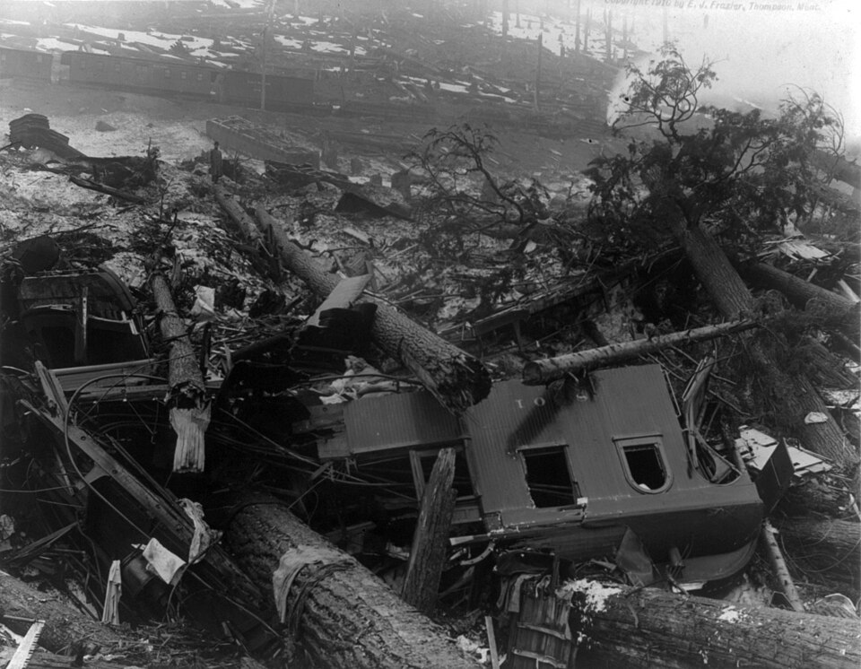
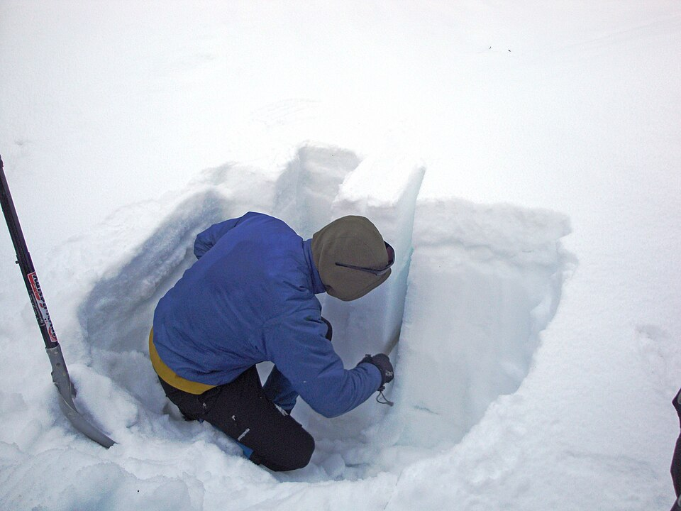

A snow avalanche is the rapid gravitational flow of snow down a slope, with or without entrained ice, rock, soil and vegetation. Most avalanches are small and harmless, but the largest move 10⁵–10⁶ tonnes of snow at speeds that can exceed 50 m s⁻¹ and exert impact pressures of hundreds of kilopascals, enough to demolish reinforced buildings and flatten mature forest. Across the world they kill, on average, a few hundred people each year; in the European Alps the long-term mean has been of the order of 100 deaths per winter, in the United States roughly 25–30, and in Canada roughly a dozen, although year-to-year variability is large and the totals are now dominated by recreational backcountry users rather than residents of mountain villages.
Avalanche science sits at the intersection of several disciplines. Snow is a porous, sintered aggregate of ice existing within a few per cent of its melting point, so it creeps, sinters and recrystallises continuously; understanding its microstructure requires thermodynamics and materials science. The release of a dry slab avalanche is a problem in fracture mechanics, involving the failure of a thin, buried weak layer beneath a cohesive slab. Once released, an avalanche is a granular or turbulent gravity current whose motion is described by depth-averaged continuum models calibrated on full-scale experiments. Forecasting combines meteorology, snowpack modelling, field observation and the psychology of risk; mitigation draws on structural engineering, land-use law and explosives technology; and the survival of buried victims is a question for emergency medicine.
This course treats each of these themes at the level of a graduate student or practising professional. Each lesson develops the physical reasoning and the key quantitative relationships, followed by worked exercises. Eight case studies then show how the concepts appear in real disasters, from railway catastrophes and wartime avalanches to earthquake-triggered ice-rock avalanches in the Andes and Himalaya.
In this course, you will:
- 1.Describe snow as a material and classify snow grains using the International Classification for Seasonal Snow on the Ground
- 2.Explain equilibrium, kinetic and melt–freeze metamorphism and the formation of persistent weak layers
- 3.Compute slope-parallel stresses in a layered snowpack and interpret stability indices
- 4.Explain the sequence of failure initiation, crack propagation and slab release, including the anticrack model, and interpret field stability tests
- 5.Classify avalanches by release type, moisture and destructive size
- 6.Relate avalanche formation and runout to terrain, and apply the α–β runout model
- 7.Use the Voellmy friction model to estimate velocities and impact pressures, and explain modern numerical models
- 8.Explain regional forecasting, the five-level avalanche danger scale and the role of human factors
- 9.Evaluate permanent and temporary mitigation, including defence structures, artificial release and hazard zoning
- 10.Interpret avalanche survival curves and the logic of companion rescue and medical management
Figures


Contents
Snow as a Material Lesson 2
Snowpack Metamorphism Lesson 3
Slabs, Weak Layers and Snowpack Stress Lesson 4
Fracture Mechanics of Slab Release and Stability Tests Lesson 5
Avalanche Types and Size Classification Lesson 6
Avalanche Terrain and Runout Lesson 7
Avalanche Dynamics and Impact Pressures Lesson 8
Forecasting, the Danger Scale and Human Factors Lesson 9
Mitigation, Defence Structures and Hazard Zoning Lesson 10
Rescue, Survival and Avalanche Medicine Case Studies
8 major events analysed References
26 sources for further reading
Image sources
- Figure 1 · Train wreckage from Wellington WA avalanche cph.3b13980. By E. J. Frazier. Public domain. From Wikimedia Commons: https://commons.wikimedia.org/wiki/File:Train_wreckage_from_Wellington_WA_avalanche_cph.3b13980.jpg
- Figure 2 · Avalanche testing snow pit. By Clayoquot. CC BY-SA 3.0. From Wikimedia Commons: https://commons.wikimedia.org/wiki/File:Avalanche_testing_snow_pit.JPG